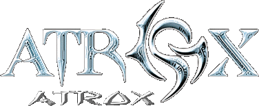
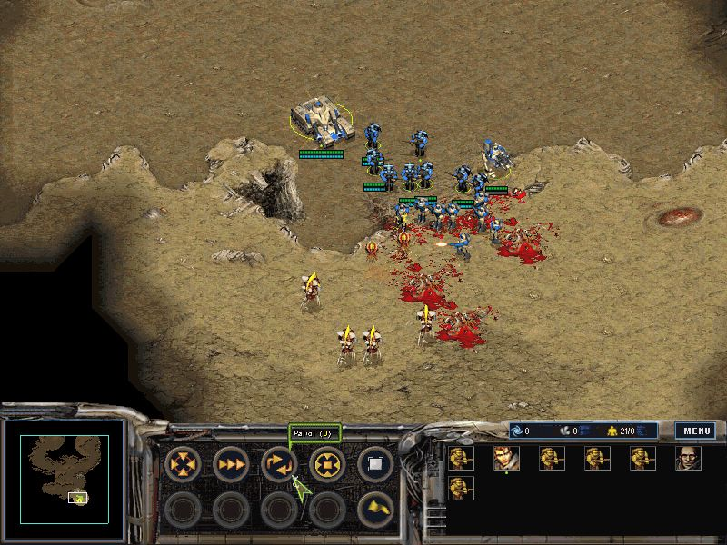
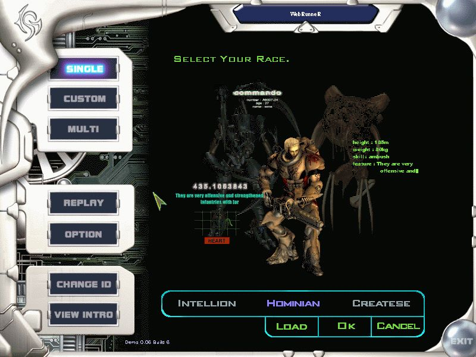
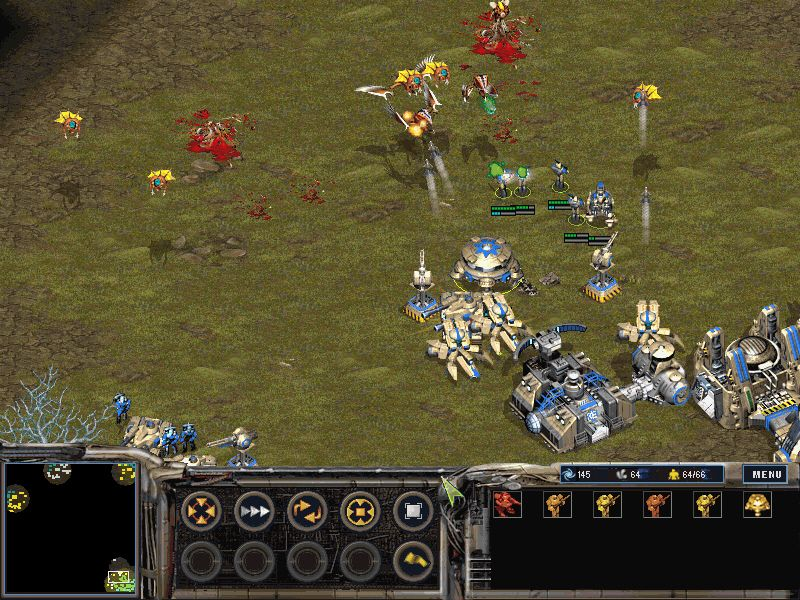

| Издатель | Interactive Ideas Ltd |
| Разработчик | JoyMax Co.LTD. |
| Жанр | RPS |
| Требуется | P-II 233, 32 Mb RAM |
| Рекомендуется | P-II 300, 64 Mb RAM |
| Дата выхода | Июнь 2002 |
Корейцы уже давно используют проверенную формулу "возьми лицензию и сделай лучше оригинала". Это касается практически всего, достаточно вспомнить историю корейской автопромышленности, которая начиналась с выпуска лицензионных машин, а сейчас превратилась в настоящую экспансию на рынки практически всех стран.
То же самое сейчас творится и игровом бизнесе, вспомните хотя бы сектор MMORPG, где корейцы, мягко говоря, доминируют. Корейские разработчики продолжают экспансию и в другие игровые жанры, вполне возможно, Atrox, детище JoyMax, является предвестником настоящего вторжения. В марте этого года игра вышла на рынке Кореи, к июню она появится и у нас.

В отличие от чилийских коллег, разработчики Atrox подошли к своему детищу гораздо основательнее. В первую очередь, это касается внешнего вида игры: не секрет, что движку Starcraft стукнуло уже четыре года, тем не менее, корейцы постарались сделать все, чтобы он выдавал более-менее пристойную картинку. Не смотря на внешнюю схожесть во многих моментах, от оригинальной графики Starcraft не осталось ничего, JoyMax переработала абсолютно все, включая малейшие кусочки ландшафта. Тем не менее, атмосфера детища Blizzard по-прежнему ощущается, ничего плохого в этом нет, скорее наоборот.
Чего не отнять у художников JoyMax, так это внимания к деталям, юниты и здания в Atrox явно выигрывают по своему качеству у Starcraft. Правда, анимация отдельных персонажей достаточно проста, но для того, чтобы это заметить, нужно долго приглядываться. Что же касается видеороликов, то они практически не проигрывают детищу Blizzard, ни в проработке, ни динамичность.

Как известно, практически в каждой корейской игре есть хотя бы крохотный кусочек от RPG, и Atrox в этом отношении не исключение. Юниты в игре не просто набирают потихоньку опыт, убивая врагов, у них растет уровень, что заметно сказывается на характеристиках. В Starcraft было нечто подобное, однако не в таких масштабах, как это сделала JoyMax. Особенно сказывается повышение опыта на героях (куда же без них), уровню к третьему они могут легко заменить пятерку аналогичных юнитов. Вот только к RPS (Role-Playing Strategy), а именно так характеризуют свою игру разработчики, Atrox вряд ли относится, скорее это RTS с мизерными вкраплениями RPG.
Не менее интересен Atrox и с тактической точки зрения. В принципе, основные типы строений остались без изменений, лишь сменив имена, но без любопытных нововведений не обошлось. Для начала, турели и бункеры научились перемещаться. Любопытно, что если турели могут быть передвинуты лишь в ограниченном определенным сектором пространстве, то бункеры лишены "оков", более того, они умеют летать. Что же касается остальных зданий, то большинство из них могут быть телепортированы, это немаловажное качество при эвакуации базы. Кроме того, некоторые юниты выполняют функцию оборонительных сооружений: к примеру, истребитель может трансформироваться в зенитную батарею, обильно поливающую летающих врагов ракетами.

Напоследок, нельзя не сказать о ресурсах. Их так и осталось два типа, правда, вместо газа теперь добывается электричество. Что же касается минералов, то они добываются из выходящих на поверхность залежей, каждое "месторождение" может обрабатывать с десяток рабочих. Что же касается электричества, то оно добывается с помощью тепловых станций, кроме того, можно построить атомную электростанцию, куда более эффективную и не требовательную к ресурсам.